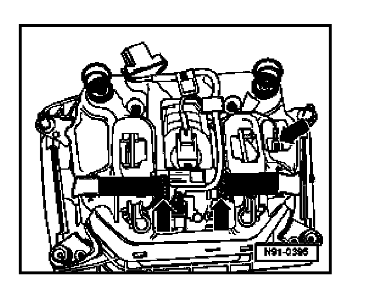
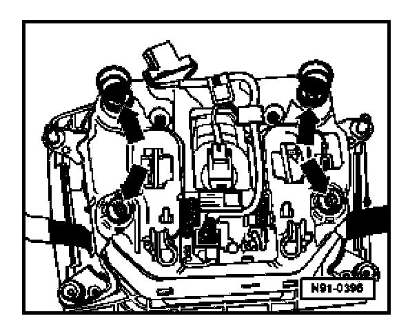
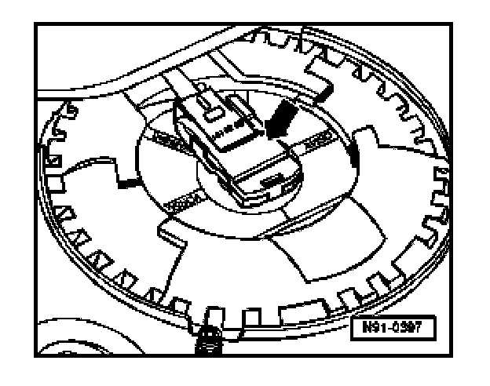
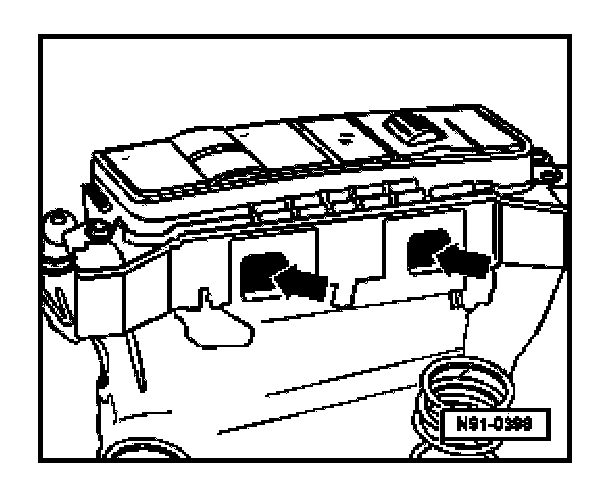
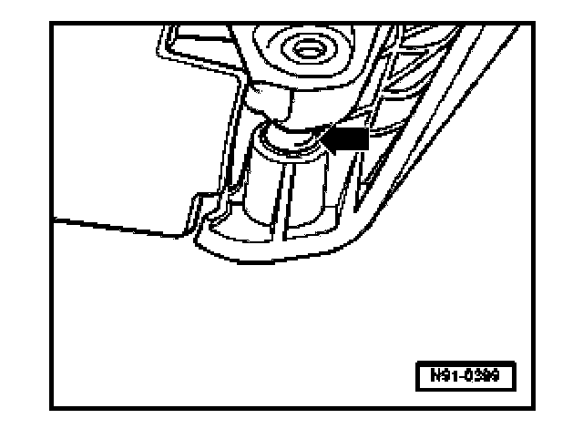

Operating Unit In Steering Wheel, Removing and Installing
Operating Unit In Steering Wheel, Removing And Installing
Removing
CAUTION:
Before beginning repairs on the electrical system:
- Switch off all electrical consumers.
- Switch ignition off and remove ignition key.
WARNING:
- Special safety precautions apply to vehicles equipped with airbags.
- Electrostatically discharge yourself before working on the airbag unit. This can be accomplished by touching an grounded metal object such as a water pipe, heater pipe or metal support.
- Remove driver's airbag.
- Remove securing plate for driver side airbag unit.
- Lay removed airbag unit on a soft surface with the upper side downwards (only valid for the following work).

- Release connector -arrow- and pull off.
WARNING:
- When setting aside airbag unit, ensure padded/front side faces upwards
- When working around the removed airbag unit, position it so that it is not directly within your field of vision.

- Remove 4 securing bolts -arrows-.

- Release connectors for airbag unit and pull off -arrow-.

- Press securing lugs inwards -arrow- (horn plate bracket removed) and remove operating unit upwards.
Installing
Install in reverse order of removal, noting the following.

During installation, ensure ball heads of operating unit -arrow- are guided into the mountings of the airbag unit.